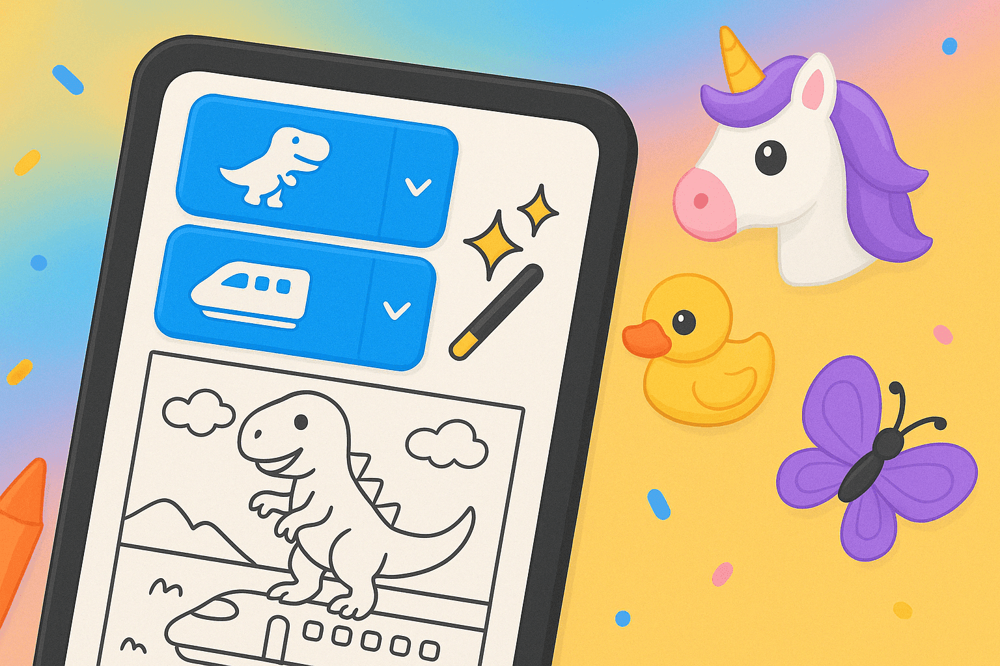
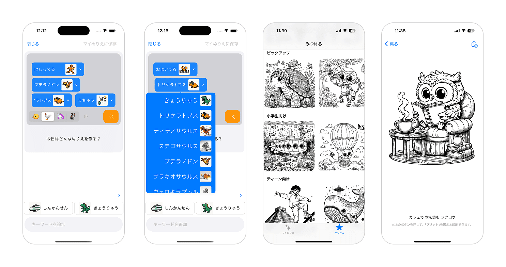
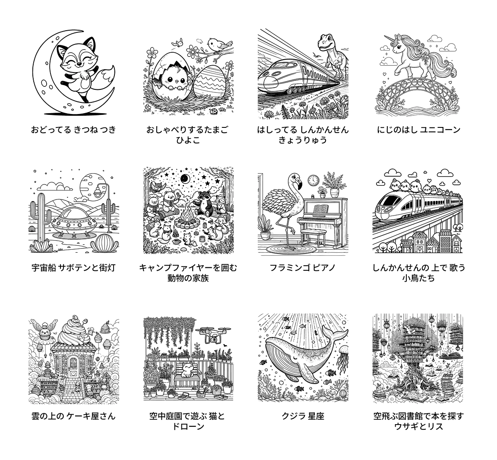
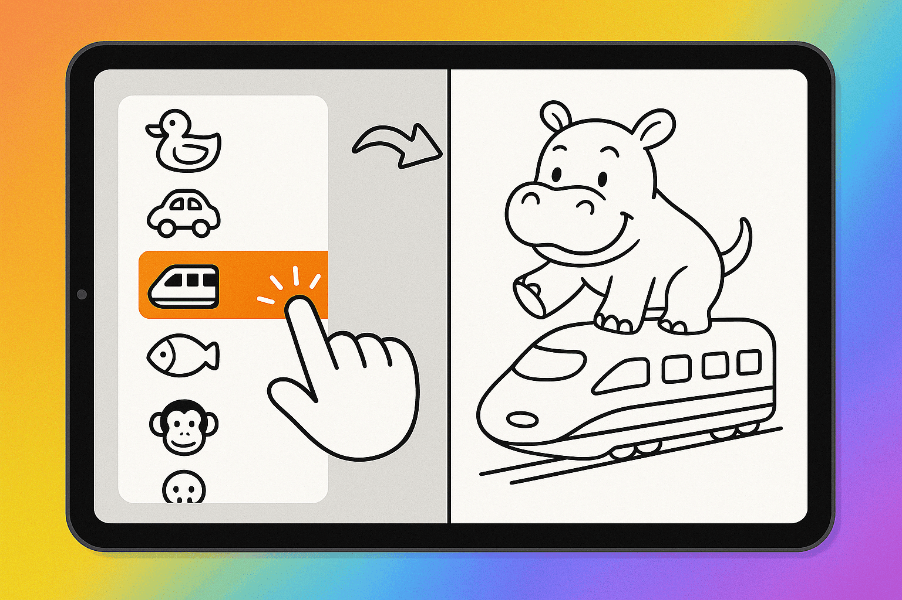
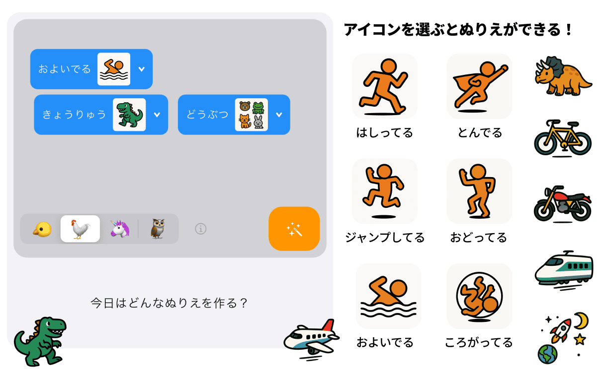
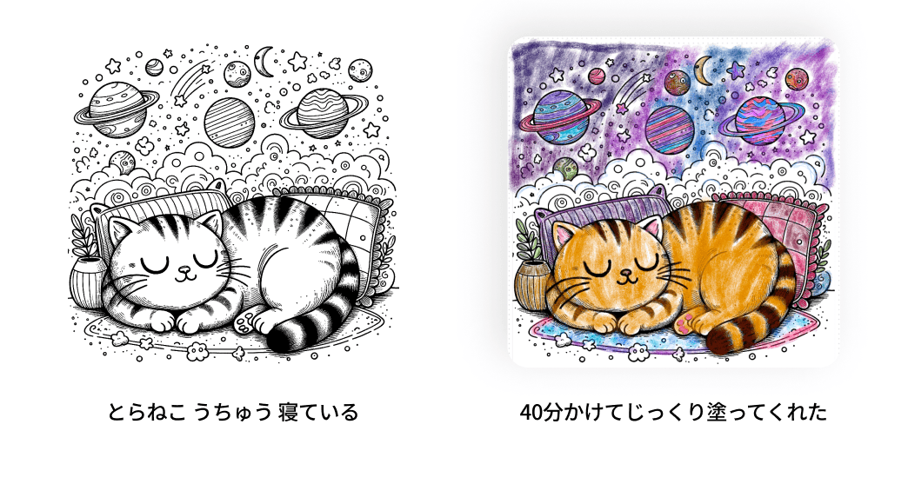
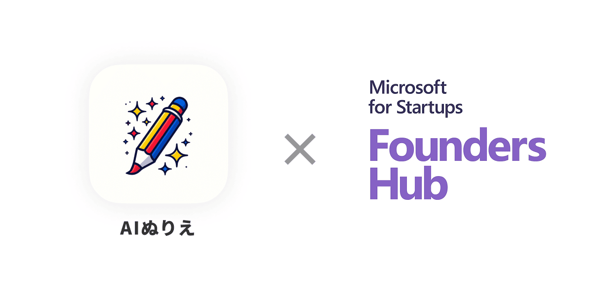

リリースを記念し、期間限定ですべての機能を無料で無制限にご利用いただけます。こどもたちの「こんな絵でぬりえをしたい！」という想いを、AIが安全で楽しくカタチにする体験を提供します。

AIとの対話で生まれる、世界に一つだけの塗り絵体験
「AIぬりえ」は、こどもたちが簡単なキーワードを選ぶか自由に入力するだけで、その言葉を反映した世界に一つだけの塗り絵が生成される、新しい知育アプリです。「宇宙を冒険するネコ」「虹の上を走るユニコーン」など自由な発想を、対象年齢や文化的背景に合わせて美しい線画イラストへと変換します。

「何が（名詞）」＋「どうしてる（動詞）」を選ぶ新しいUI設計
言葉の入力がむずかしい小さなこどもたちも楽しめるように、「何が（名詞）」＋「どうしてる（動詞）」を選ぶことで入力が完了する、従来にないUIを作りました。これは新しい言葉のインターフェースです。

どんなことばも「わかる」アイコンに
こどもたちが入力したキーワードを視覚的に理解できるよう、キーワードとピクトグラム風アイコンをセットで表示しています。キーワードは用意されたものだけでなく自由入力も可能です。キーワードが入力されると、AIが意味を理解し、対応する親しみやすいアイコンを表示します。これにより、3歳くらいの小さなお子さまから直感的にぬりえ作りを楽しむことができます。
安全・安心への配慮
こどもたちが使うサービスとして、安全性には最大限配慮しています。入力されたキーワードは、画像生成が始まる前に、AIによって不適切な言葉が含まれていないかチェックされ、必要に応じてフィルタリングや表現の変換が行われます。また、基盤となる画像生成AIが持つ高度なコンテンツフィルター機能も活用し、不適切な画像や、キャラクターなどの権利侵害につながる画像の生成を未然に防ぎます。
遊び方は無限大 ：プリント、コレクション、発見
生成された塗り絵は、プリンターで簡単に印刷して、紙の上で自由に色を塗って楽しめます。また、すぐに印刷をしなくても、コレクションとして楽しむこともできます。さらに「みつける」タブでは、編集部が毎日ピックアップするおすすめの塗り絵を見つけて印刷することができます。
開発の背景：「AIと遊ぶ」原体験をすべての子どもたちへ
画像生成AIの普及は、こどもの「ぬりえ遊び」を受動的なものから能動的な創造活動へと変える絶好のタイミングだと考えました。「ぬりえ」という安全で親しみやすい遊びなら、小さなこどもでも安心してAIとふれあう第一歩にふさわしいと思い立ち「AIぬりえ」の開発に着手しました。開発中に実施した展示イベント（『未踏会議』2024、2025）では、こどもたちが目を輝かせ、自分のアイデアが形になる喜びに夢中になる姿を目の当たりにしました。中には40分以上も集中して塗り絵に取り組む子もおり、AIが創造性を刺激する力を確信しました。この原体験を、より多くのこどもたちに届けたいと考えています。
Microsoft for Startups Founders Hubプログラムへの採択
本アプリはマイクロソフト社が世界140カ国以上で展開するスタートアップ支援プログラム「Microsoft for Startups Founders Hub」に採択（レベル3: Grow）されました。このプログラムの支援により、Microsoft Azureクレジットの活用、専用AIトレーニングやエキスパートによるサポートなどを受け、高品質な製品化が実現しました。今後もMicrosoftの先進技術を積極的に取り入れ、さらなる製品改善と機能拡充に取り組んでまいります。
今後の展開とコラボレーション
株式会社ズカンドットコムは、教育機関との共同研究やイベントでの活用、様々な企業様とのコラボレーションなどを積極的に検討していきたいと考えております。お気軽にお問合せください。
アプリ概要:
名称： AIぬりえ
価格： 無料
対応OS： iOS, iPadOS （iPhone/iPad向け）
公式サイト： https://coloring.zukan.com
株式会社ズカンドットコムについて
株式会社ズカンドットコムは、WEB図鑑サービスや魚のAI写真判定アプリなどを通じて、生き物や自然への興味関心を育む多彩な教育サービスを提供しています。「AIぬりえ」を通じて、世界共通のシンプルな遊び「ぬりえ」を起点に、こどもたちが自由な創造力と好奇心を育める環境づくりへ貢献してまいります。
技術的なお問い合わせや共同研究、業務提携に関するご相談は、以下の問い合わせ先までお気軽にご連絡ください。
担当： 直江憲一
MAIL： info@zukan.com
会社情報： https://corp.zukan.com
FAQ（よくあるご質問）
Q1: 「生成AIによる塗り絵」はどのような仕組みですか？
入力したキーワードや文化背景、対象年齢等から画像生成向けの情景描写文をGPT-4oで作成し、それを画像生成AIモデル（OpenAI DALL·E 3, Google Imagen 3）へ入力して線画画像として出力する仕組みです。画像生成AIモデルは得意領域によって使い分けられています。
Q2: 子どもが使っても安全ですか？不適切・危険な画像の生成は防げますか？
はい、安全性は最重視しています。キーワード入力段階で独自のエージェントAIが不適切ワードや権利侵害表現をフィルタリングし、画像生成AI自体にもコンテンツフィルター機能があります。
Q3: 将来的に有料になりますか？
現在はリリース記念で全機能が無料・無制限でご利用いただけます。将来的には、塗り絵の「生成」機能についてサブスクリプション（定額課金）モデルを導入する予定です。ただし、「みつける」タブでの塗り絵利用や、過去に生成され誰もコレクションしていない塗り絵の再利用などは無料で提供し、無料ユーザーでも十分楽しめるアプリを目指します。
Q4: 生成された塗り絵の著作権はどうなりますか？学校で使っても良いですか？
生成された塗り絵の著作権は株式会社ズカンドットコムに帰属します。個人や家庭内で楽しむ範囲でのご利用は自由です。学校の授業など、教育目的での利用（複製・配布含む）は著作権法第35条に基づき許諾なくご利用いただけます。商業利用や法人利用については別途お問い合わせください。
Q5: アプリ内で直接色を塗ることはできますか？
本アプリ内に塗り絵機能はありません。紙に印刷してお楽しみください。お持ちのお絵描きアプリ等に画像を転送してデジタルで色塗りをお楽しみいただくこともできます。
Q6: Android版アプリもリリースされますか？
はい。現在鋭意開発中であり、数週間程度でのリリース予定です。